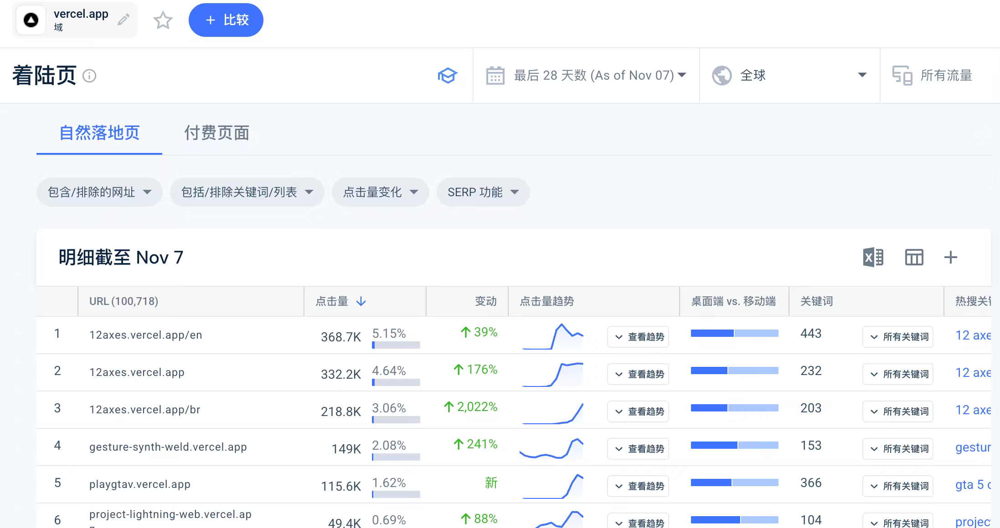

群友发来一张 vercel.app 的着陆页流量报表，问这个页面该看什么。哥飞没有直接讲报表怎么读，而是先讲原理：这类免费子域名下流量高的页面，需求已经被人验证过了；而发布者大概率不懂 SEO，把 SEO 做好就有机会拿到排名和流量。
谁会用 Vercel 子域名直接发页面
哥飞先给这类发布者画了个像：懂一些编程，或者不懂编程但用 AI 写出了页面；大概率也不懂 SEO，也不想去花钱买域名。于是就在 Vercel 上放一个工具或小游戏，给别人用、给别人玩。
这个画像决定了这批页面的价值：它们既承载真实需求，又缺少专业运营。
从高流量页面反推能做需求
- 去 Vercel 这类子域名下找流量比较高的页面，从中发现一些可能能做的需求。
- 这些需求别人已经帮我们验证过了，不用再猜市场是否存在。
- 但对方的 SEO 大概率做得不好，我们把 SEO 做好，就有可能拿到排名、拿到流量。
群里发的那张截图就是这样的报表：12axes.vercel.app 的英文页最近 28 天拿到 368.7K 次自然点击，gesture-synth-weld.vercel.app 有 149K，playtav.vercel.app 有 115.6K，全部是挂在免费子域名上的页面。

在哪看这些数据
范围不只是 Vercel。哥飞说，vercel.app、github.io、pages.dev 等子域名的流量页面和关键词都可以看，他们的数据服务已经把这类数据抓取好了：new.web.cafe/hosted。
原始对话
2026 年 11 月 11 日下午的群聊，由哥飞转发的一段对话展开：化鹏先是贴了报表截图提问，哥飞解释原理后，wxnet 追问截图是不是 vercel 的页面。原始记录共 6 条，按时间顺序全部保留。
聊天记录（6 条）
参与者 4 人：化鹏、哥飞、wxnet、Stu(dy ing) · 时间范围 2026年11月11日 16:14 至 2026年11月11日 16:26 · 原始 6 条，保留 6 条